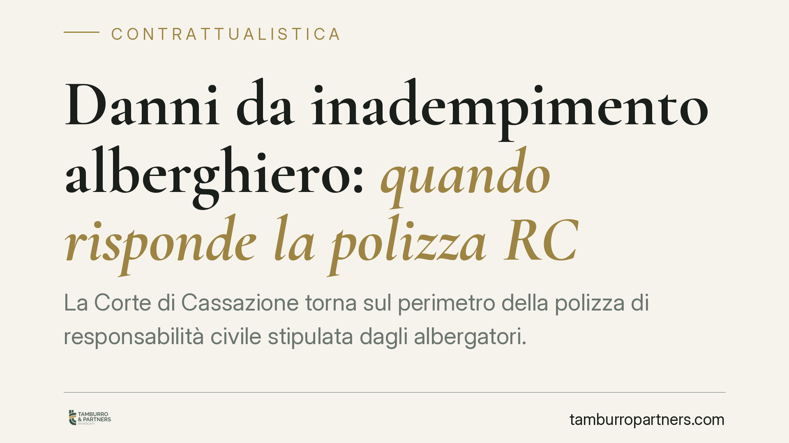

Danni da inadempimento alberghiero: quando risponde la polizza RC
La Corte di Cassazione torna sul perimetro della polizza di responsabilità civile stipulata dagli albergatori. Il punto: la copertura opera anche per i danni da inadempimento del contratto d'albergo riconducibili a colpa, salvo dolo o clausola che escluda espressamente la colpa grave. Una lettura che incide sul rapporto tra struttura ricettiva, cliente e compagnia assicurativa.

Il caso e il principio
La questione riguarda la sorte dei danni subiti dal cliente di una struttura ricettiva a causa di un inadempimento del contratto d'albergo: pensiamo al disservizio che compromette il soggiorno o al pregiudizio derivante da una prestazione eseguita in modo difettoso.
Il nodo è stabilire se la polizza di responsabilità civile stipulata dall'albergatore copra anche questa tipologia di danni, o se la compagnia possa sottrarsi all'obbligo di manleva invocando la natura "contrattuale" dell'inadempimento.
La risposta della giurisprudenza di legittimità è nel senso dell'operatività della copertura, con un limite preciso: l'assicurazione risponde dei danni causati con colpa, mentre resta fuori il danno provocato con dolo. La colpa grave è coperta, salvo che il contratto di polizza la escluda in modo espresso.
Inquadramento normativo
Il riferimento centrale è l'art. 1917 c.c., che disciplina l'assicurazione della responsabilità civile. La norma obbliga l'assicuratore a tenere indenne l'assicurato di quanto questi deve pagare a un terzo in dipendenza della responsabilità dedotta in contratto, con esclusione espressa dei soli danni "derivanti da fatti dolosi". Il dolo, quindi, è l'unico limite legale inderogabile; la colpa, anche grave, rientra nella copertura salvo diversa pattuizione.
Sul piano della responsabilità dell'albergatore occorre distinguere i profili. L'inadempimento del contratto d'albergo trova la sua disciplina generale nell'art. 1218 c.c. (responsabilità del debitore) e nelle regole speciali sul deposito in albergo di cui agli artt. 1783 e seguenti c.c. (responsabilità per le cose portate in albergo).
Altra e distinta è la cosiddetta vacanza rovinata, che il Codice del Turismo (d.lgs. 79/2011) regola all'art. 47, nella versione che recepisce la direttiva UE sui pacchetti turistici. Quella disciplina riguarda il rapporto tra organizzatore o venditore di pacchetti e turista, non il singolo albergatore che vende il solo pernottamento. È una sovrapposizione che va evitata: chi acquista unicamente il soggiorno in hotel si muove sul terreno del contratto d'albergo, non del pacchetto turistico.
Implicazioni pratiche
Gli effetti del principio si colgono su tre fronti.
Per gli albergatori. La polizza RC, se non contiene clausole di esclusione della colpa grave, offre copertura anche per i danni da inadempimento colposo verso il cliente. È utile verificare l'esatto perimetro delle garanzie prestate: la presenza di una clausola che circoscrive la copertura alla sola colpa lieve riduce sensibilmente la tutela.
Per le compagnie assicurative. Il margine per negare la manleva è limitato al dolo dell'assicurato o alle ipotesi espressamente escluse in polizza. L'eccezione fondata sulla mera natura contrattuale dell'inadempimento non è, di per sé, sufficiente.
Per i clienti. Il danneggiato dispone di un soggetto solvibile cui rivolgersi, la compagnia, nei limiti e con le modalità previste dal contratto assicurativo e dalla legge. Resta ferma la necessità di provare l'inadempimento e il danno subito.
Cosa fare in concreto
- Verifica il testo della polizza RC della struttura: individua le clausole su dolo, colpa grave ed eventuali esclusioni specifiche.
- Documenta il disservizio con prove tempestive (foto, comunicazioni scritte, reclami formali) per fissare l'inadempimento e il nesso con il danno.
- Inquadra correttamente il rapporto: distingui se hai acquistato il solo pernottamento (contratto d'albergo) o un pacchetto turistico, perché cambiano norme e soggetti responsabili.
- Attiva per tempo le garanzie: rispetta termini e modalità di denuncia del sinistro previsti dal contratto assicurativo.
- Conserva la documentazione contrattuale di prenotazione e pagamento, utile a ricostruire l'oggetto della prestazione dovuta.
---
Contributo informativo a cura di Tamburro & Partners - Avv. Giuseppe Tamburro. Non costituisce parere legale.
Ogni contratto ha il suo equilibrio.
Se vuoi una revisione delle clausole o una redazione su misura, scrivi allo studio. Ti rispondiamo entro un giorno lavorativo.